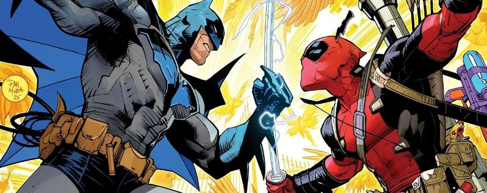
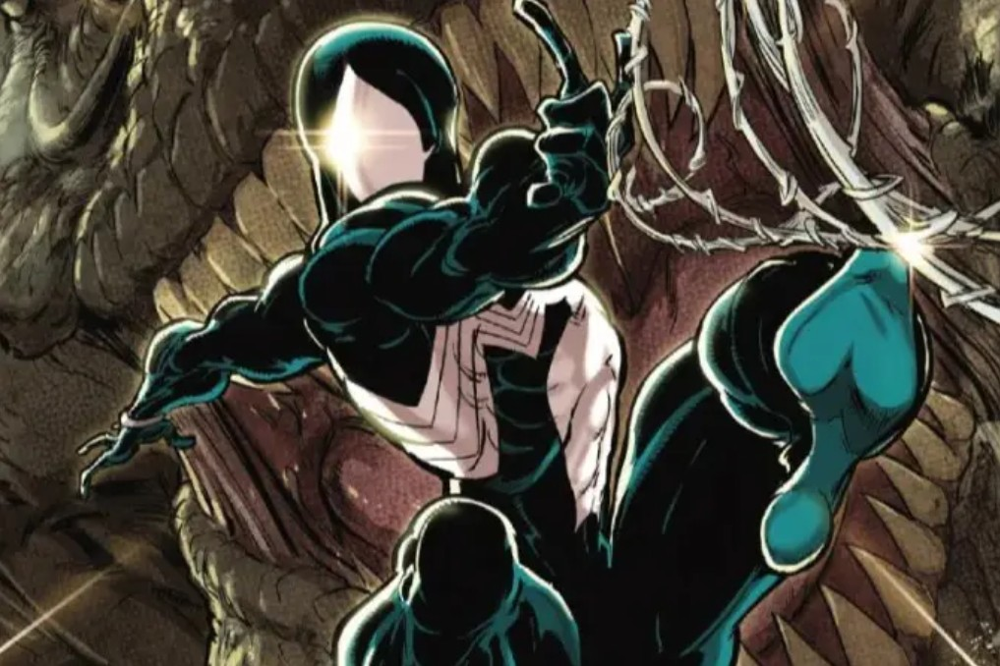
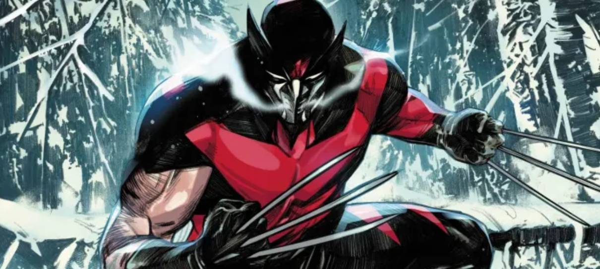

Batman vs. Deadpool — Crossover épico com a DC

Pela primeira vez em mais de 20 anos, Marvel e DC unem forças novamente com dois one-shots: Deadpool/Batman #1 (Marvel) chega em 17 de setembro de 2025; seguido por Batman/Deadpool #1 (DC) em novembro. Escritas por Zeb Wells e Grant Morrison, respectivamente, com arte de Greg Capullo e Dan Mora.
Com isso, elas vão colocar fim a um hiato que começou em 2003, quando a Liga da Justiça da América se encontrou com os Vingadores. Enquanto as duas empresas fazem segredo sobre o que esperar das tramas, elas garantem que ambas vão ser bastante criativas e divertidas.
‘Homem-Aranha & Wolverine #3’ leva heróis à Terra Selvagem e revela novos vilões

Nas edições anteriores de Spider-Man & Wolverine (2025), Logan foi contatado por um antigo colega dos seus dias de espionagem para encontrar uma base de dados da S.H.I.E.L.D. que continha detalhes sobre todos os agentes duplos do planeta, além de todas as missões das quais esses agentes já participaram. O mutante canadense recrutou a ajuda do Homem-Aranha, para que Peter Parker deletasse as informações contidas na base de dados. Mas, durante a missão, o herói aracnídeo descobriu um vídeo que mostrava detalhes sobre a última missão de seus pais, Richard e Mary Parker, que trabalhavam como agentes secretos para os EUA e que morreram num acidente de avião causado pelo Caveira Vermelha. O vídeo revelava que Logan aparentemente havia sido responsável pela morte dos pais de Peter, ao surpreendê-los dentro do tal avião. Furioso, o Homem-Aranha travou uma luta violenta contra seu antigo amigo. O confronto terminou com Wolverine perfurando o abdome de Peter.
Wolverine se torna o novo Soldado Invernal em HQ

Ao longo das décadas, o Wolverine já teve muitas identidades, mas agora o mutante assume sua alcunha mais letal como o novo Soldado Invernal dos quadrinhos da Marvel. Essa é a premissa de Ultimate Wolverine, HQ que foi anunciada pela editora na New York Comic-Con.Com roteiro de Chris Condon e arte de Alessandro Cappuccio, o quadrinho chegará às bancas dos EUA em janeiro de 2025, apresentando a nova versão do Carcaju.Com uniforme bastante parecido com o do Bucky Barnes original, Logan ganhou até uma focinheira, mostrando que o mutante está mais sanguinário do que nunca.O Universo Ultimate faz parte da mais recente reformulação da Marvel nos quadrinhos, com heróis como Homem-Aranha e Pantera Negra em novos gibis sob o selo.